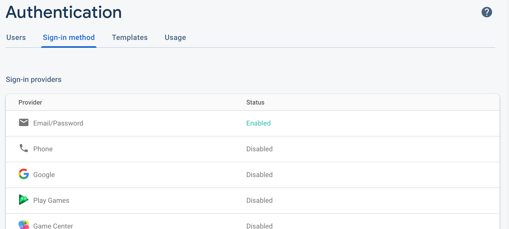

import React from 'react';
const AuthContext = React.createContext();
export default AuthContext;const [authenticated, setAuthenticated] = useState(false); <AuthContext.Provider value={{ authenticated, setAuthenticated }}>
<NavigationContainer>
...
</NavigationContainer>
</AuthContext.Provider> <AuthContext.Provider value={{ authenticated, setAuthenticated }}>
<NavigationContainer>
{authenticated ? (
<Stack.Navigator>
<Stack.Screen name="Home" component={Home} />
<Stack.Screen name="Details" component={Details} />
</Stack.Navigator>
) : (
<Stack.Navigator>
<Stack.Screen name="Login" component={Login} />
<Stack.Screen name="Signup" component={Signup} />
</Stack.Navigator>
)}
</NavigationContainer>
</AuthContext.Provider>signInWithEmailAndPassword of Firebase in your Login page for authentication. Here is the method that does the authentication. If the authentication is successful, you can setAuthenticated to true, to use the first stack navigation that you defined which contains the home and details pages. The code shown in the completed example is more extensive than what is shown here, but all the additions are for showing error messages that you can use. const handleAuth = () => {
firebase.auth().signInWithEmailAndPassword(email, password)
.then(() => {
firebase.auth().onAuthStateChanged(
(user) => {
if (user != null) {
setAuthenticated(true);
}
},
);
})
.catch((error) => {
console.log(error.message);
});
};setAuthenticated method from the context, the Login page needs to extract it from the context and use it.const { setAuthenticated } = React.useContext(AuthContext);const createUser = () => {
firebase.auth().createUserWithEmailAndPassword(email, password)
.then(() => {
//show success message.
})
.catch((error) => {
//show error messages.
});
};setAuthenticated from the context and set it to true, or you may want to direct the user to the login page, in that case you can use navigation to do this. The given code example, does not do any of these. After a successful user registration, it only asks users to go to the login page and login in the application.const createUser = () => {
firebase.auth().createUserWithEmailAndPassword(email, password)
.then(() => {
setErrorMessage('');
setMessage('You registered successfully. Please login.');
})
.catch((error) => {
setErrorMessage(error.message);
setMessage('');
});
}; const checkPassword = () => {
if (password === repeatPassword) {
return true;
}
setErrorMessage('Password repeat does not match.'); setMessage('');
return false;
}; const createUser = () => {
firebase.auth().createUserWithEmailAndPassword(email, password)
.then(() => {
setErrorMessage('');
setMessage('You registered successfully. Please login.');
})
.catch((error) => {
setErrorMessage(error.message);
});
};setAuthenticated method of the context, for the signout. In the previous implementation we were navigating to the Login page. Note that because of the two stack navigation that we have and the fact that we are controlling them with a state, if we set the value of the state to false, basically the user will be forced to use the other stack navigation which starts from the Login page! <View style={styles.header}>
<Button mode="text" color="#ffffff" icon="location-exit"
onPress={
() => {
setAuthenticated(false);
}
}> Sign Out </Button>
</View>const { setAuthenticated } = React.useContext(AuthContext);
Header setAuthenticated={setAuthenticated} style={styles.header} />const firebaseConfig = {
apiKey: 'Add your api key here!',
projectId: 'add your project id here',
appId: 'add your app id here!',
};nmp start;
expo start;